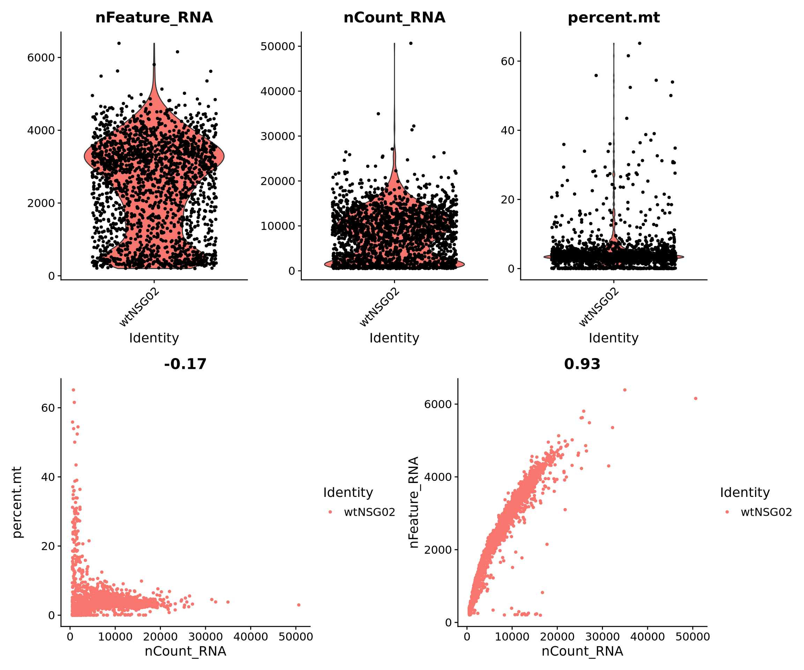
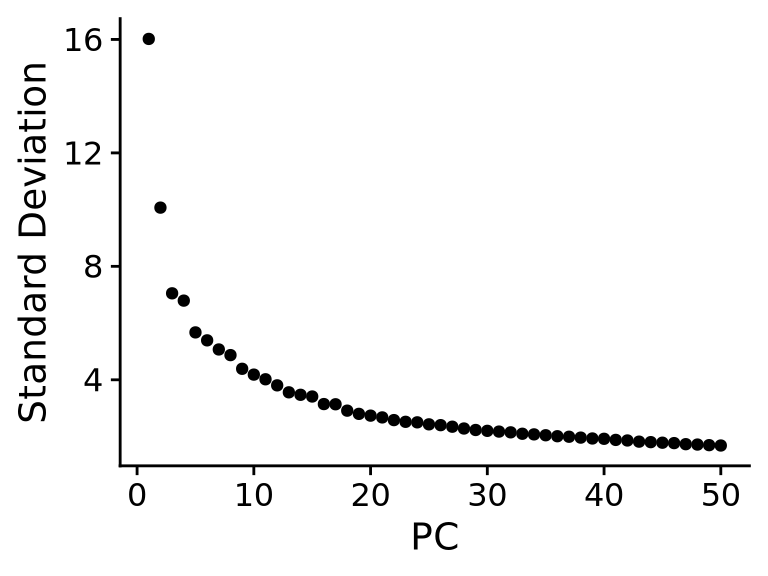
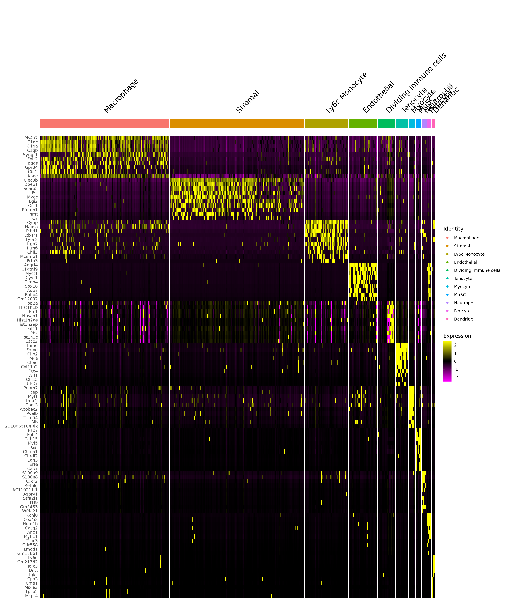
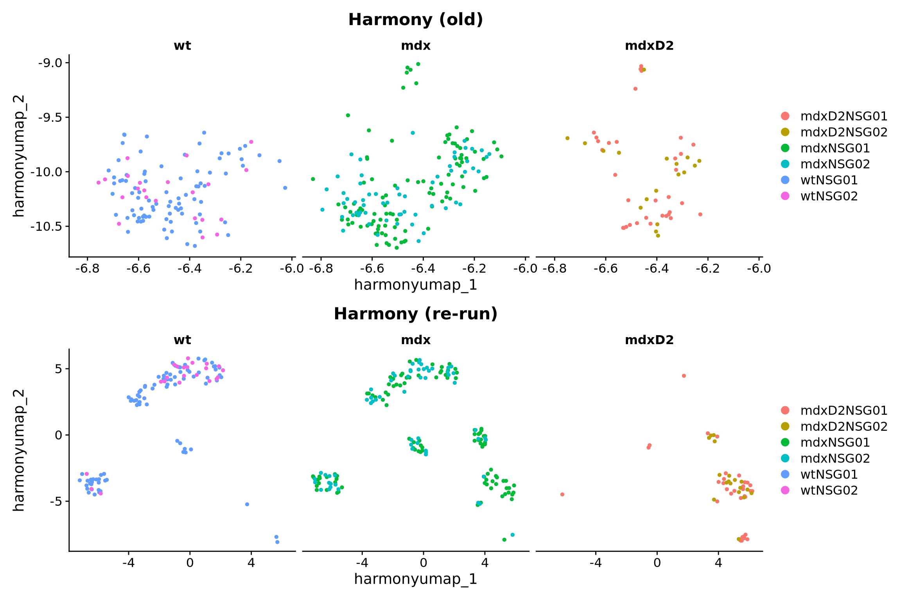

Single-cell RNA-seq analysis of wildtype, mdx, and mdx/D2 mice
Date: 19/10/2025
Description: Saleh et al (2022) performed RNA-seq on single-cell suspensions from muscles of healthy (wt-NSG), dystrophic (mdx-NSG), and severely dystrophic (mdxD2-NSG) mouse. For each mouse model, N = 2 muscle samples were included. 10X count matrices are available in the NCBI Gene Expresson Omnibus under accession GSE213925.
# Load libs ----
library(dplyr)
library(tidyr)
library(tibble)
library(Seurat)
library(stringr)
library(Matrix)
library(harmony)
# For plotting ----
library(circlize)
library(patchwork)
library(ggplot2)
library(viridis)
library(scCustomize)
library(ComplexHeatmap)DATA LOADING
Make sure that we have 3 files (1) barcodes.tsv, (2) features.tsv (or genes.tsv) and (3) matrix.mtx for each sample; placed in a separate subfolder.
Create Seurat object for each sample
# list all folders (1 folder = 1 muscle sample)
samples <- list.dirs(c("~/project_3_mdx-mdxD2-mice/wtNSG01", "~/project_3_mdx-mdxD2-mice/wtNSG02", "~/project_3_mdx-mdxD2-mice/mdxNSG01", "~/project_3_mdx-mdxD2-mice/mdxNSG02", "~/project_3_mdx-mdxD2-mice/mdxD2NSG01", "~/project_3_mdx-mdxD2-mice/mdxD2NSG02"))
# loop through and read each dataset
for (folder in samples) {
foldername <- basename(folder) # get just the folder name
data <- Read10X(data.dir = folder) # read 10X data
assign(paste0(foldername, ".data"), data) # create object [name].data
# create Seurat object
seu <- CreateSeuratObject(
counts = data,
project = foldername,
min.features = 200, # include only cells where >=200 features detected
min.cells = 3 # include only features that are detected in >=3 cells
)
assign(foldername, seu) # put the object back into environment
}QUALITY CONTROL
Calculate percent.mt
## loop %mt calculation ----
samples <- c("wtNSG01", "wtNSG02", "mdxNSG01", "mdxNSG02", "mdxD2NSG01", "mdxD2NSG02")
for (obj_name in samples) {
seu <- get(obj_name)
seu[["percent.mt"]] <- PercentageFeatureSet(seu, pattern = "^mt[-\\.]")
assign(obj_name, seu)
}Visualize QC metrics
QC plots for all samples (before filtering)
# example plot
# individual plots
p1 <- VlnPlot(wtNSG02, features = c("nFeature_RNA", "nCount_RNA", "percent.mt"),
ncol = 3, pt.size = 1)
p2 <- FeatureScatter(wtNSG02, feature1 = "nCount_RNA", feature2 = "percent.mt")
p3 <- FeatureScatter(wtNSG02, feature1 = "nCount_RNA", feature2 = "nFeature_RNA")
# combine plots
p1 / (p2 | p3)
Filtering poor-quality cells
Remove cells with >15% of UMIs mapped to mt genes (according to Methods described in the paper)
“removing cells with fewer genes than 500, 800 and 800 and higher genes than 5000, 6000 and 6000 genes from the analysis in wt-NSG, mdx-NSG and mdxD2-NSG samples, respectively”
# Remove cells from wt-NSG ----
wtNSG01_subset <- subset(wtNSG01,
subset = nFeature_RNA > 500 & nFeature_RNA < 5000 &
nCount_RNA > 500 & nCount_RNA < 25000 &
percent.mt < 15)
dim(wtNSG01_subset) # check number of cells after subset## [1] 17546 3305wtNSG02_subset <- subset(wtNSG02,
subset = nFeature_RNA > 500 & nFeature_RNA < 5000 &
nCount_RNA > 500 & nCount_RNA < 20000 &
percent.mt < 15)
dim(wtNSG02_subset)## [1] 15862 1636# Remove cells from mdx-NSG ----
mdxNSG01_subset <- subset(mdxNSG01,
subset = nFeature_RNA > 800 & nFeature_RNA < 6000 &
nCount_RNA > 500 & nCount_RNA < 35000 &
percent.mt < 15)
dim(mdxNSG01_subset)## [1] 18089 5558mdxNSG02_subset <- subset(mdxNSG02,
subset = nFeature_RNA > 800 & nFeature_RNA < 6000 &
nCount_RNA > 500 & nCount_RNA < 20000 &
percent.mt < 15)
dim(mdxNSG02_subset)## [1] 15796 1120# Remove cells from mdxD2-NSG ----
mdxD2NSG01_subset <- subset(mdxD2NSG01,
subset = nFeature_RNA > 800 & nFeature_RNA < 6000 &
nCount_RNA > 500 & nCount_RNA < 35000 &
percent.mt < 15)
dim(mdxD2NSG01_subset)## [1] 17992 6392mdxD2NSG02_subset <- subset(mdxD2NSG02,
subset = nFeature_RNA > 800 & nFeature_RNA < 6000 &
nCount_RNA > 500 & nCount_RNA < 40000 &
percent.mt < 15)
dim(mdxD2NSG02_subset)## [1] 18319 5806# Plot together
# Merge the objects first
merged <- merge(
wtNSG01_subset,
y = list(wtNSG02_subset,
mdxNSG01_subset, mdxNSG02_subset,
mdxD2NSG01_subset, mdxD2NSG02_subset),
add.cell.ids = c("wtNSG01", "wtNSG02",
"mdxNSG01", "mdxD2NSG02",
"mdxD2NSG01", "mdxD2NSG02"),
project = "wt_mdx_mdxD2"
) %>% JoinLayers()
# Classify the conditions
merged$condition <- dplyr::case_when(
merged$orig.ident %in% c("wtNSG01", "wtNSG02") ~ "wt",
merged$orig.ident %in% c("mdxNSG01", "mdxNSG02") ~ "mdx",
merged$orig.ident %in% c("mdxD2NSG01", "mdxD2NSG02") ~ "mdxD2"
)
# Plot
VlnPlot(merged, features = c("nFeature_RNA", "nCount_RNA", "percent.mt"),
ncol = 3, pt.size = 0.5)
Number of cells in each condition:
merged$condition <- factor(merged$condition, levels = c("wt", "mdx", "mdxD2"))
table(merged$condition)##
## wt mdx mdxD2
## 4941 6678 12198PROCESSING INDIVIDUAL SEURAT OBJECTS
First, we’ll try processing each sample following the standard Seurat workflow:
NormalizeData –> FindVariableFeatures –> ScaleData –> RunPCA
According to the paper, variance due to cell cycle should be
regressed out when scaling data. To use CellCycleScoring
function, we need to normalize the data beforehand.
Normalization & Cell cycle scores
# cc.genes include human genes (how 'bout murine?)
# need to change cell cycle gene list in Seurat to lowercase
cc.genes <- Seurat::cc.genes
s.genes <- str_to_title(cc.genes$s.genes) # e.g. ADAM12 → Adam12
g2m.genes <- str_to_title(cc.genes$g2m.genes)
# check how many of the gene names match :
# sum(rownames(wtNSG01) %in% s.genes)samples_subset <- c("wtNSG01_subset", "wtNSG02_subset",
"mdxNSG01_subset", "mdxNSG02_subset",
"mdxD2NSG01_subset", "mdxD2NSG02_subset")
# loop the cell cycle scoring ----
for (obj_name in samples_subset) {
seu <- get(obj_name)
seu <- NormalizeData(seu,
verbose = FALSE) %>% # Seurat v5 object must be normalized (to generate to 'data' layer) before Cell Cycle Scoring
CellCycleScoring(s.features = s.genes,
g2m.features = g2m.genes,
set.ident = TRUE)
assign(obj_name, seu)
}
# confirm after Cell Cycle Scoring
head(wtNSG02_subset@meta.data[, c("S.Score", "G2M.Score", "Phase")])## S.Score G2M.Score Phase
## AAACCCACACCTCAGG-1 -0.04002763 -0.055894238 G1
## AAACGAAAGTGGAAAG-1 -0.06723013 -0.039478670 G1
## AAACGAACAATCGCCG-1 -0.02287563 -0.034691242 G1
## AAACGAACAGGAGGAG-1 0.02226274 0.002000912 S
## AAACGAATCGAATCCA-1 -0.03438708 0.043326426 G2M
## AAACGCTCACCGTCTT-1 -0.01180265 -0.044048513 G1# visualize
RidgePlot(wtNSG02_subset, features = c("Cdk1","Mki67","Ube2c",
"Top2a","Mcm6","Pcna",
"Pola1","Uhrf1","Cdc45"), ncol = 3)# to see if cell cycle heterogeneity accounts for variance in PCA
wtNSG01_subset <- wtNSG01_subset %>%
ScaleData(verbose = FALSE) %>%
RunPCA(features = c(s.genes, g2m.genes), verbose = FALSE)
wtNSG02_subset <- wtNSG02_subset %>%
ScaleData(verbose = FALSE) %>%
RunPCA(features = c(s.genes, g2m.genes), verbose = FALSE)
DimPlot(wtNSG01_subset) + DimPlot(wtNSG02_subset)FindVariableFeatures and ScaleData
# samples_subset already normalized ==> 'data' layer in 'RNA' assay
# FindVariableFeatures %>% ScaleData ----
for (obj_name in samples_subset) {
seu <- get(obj_name)
seu <- FindVariableFeatures(seu,
assay = "RNA",
selection.method = "vst",
nfeatures = 3000,
verbose = FALSE) %>%
# regress out the variance introduced by MT gene expression
# and cell cycle heterogeneity
ScaleData(vars.to.regress = c("percent.mt", "S.Score", "G2M.Score"),
verbose = FALSE)
assign(obj_name, seu)
}SCTransform
This single command can replace NormalizedData,
ScaleData, and FindVariableFeatures.
SCTransform does it better to mitigate the effect of highly expressed genes.
SCTransform adds another assay ‘SCT’ beside
‘RNA’.
# loop SCTransform for all seurat objects ----
for (obj_name in samples_subset) {
seu <- get(obj_name)
seu <- SCTransform(
seu,
variable.features.n = 3000,
do.center = TRUE,
vars.to.regress = c("percent.mt",
"S.Score", "G2M.Score"),
return.only.var.genes = FALSE,
verbose = FALSE
)
assign(obj_name, seu)
}
# two methods return different number of features
mdxNSG02_subset@assays$RNA## Assay (v5) data with 15796 features for 1120 cells
## Top 10 variable features:
## Acta1, Mylpf, Myl1, Fmod, Ckm, Tnnc2, Tnni2, Tnnt3, Rgs5, Tpm1
## Layers:
## counts, data, scale.datamdxNSG02_subset@assays$SCT## SCTAssay data with 14390 features for 1120 cells, and 1 SCTModel(s)
## Top 10 variable features:
## Cd74, Lyz2, Fabp4, H2-Aa, H2-Ab1, Apoe, H2-Eb1, C1qb, C1qa, C1qcDimensionality Reduction
Linear dimensionality reduction: PCA
Non-linear dimensionality reduction: t-SNE, UMAP
Intuitively, the non-linear methods try to place every sample in a low-dimensional space (2D or 3D), so that the distances or neighborhood relationships between different samples in the original high-dimensional space are largely retained.
PCA
# Collect plots
plots <- list()
# loop PCA and plot for each seurat object ----
for (obj_name in samples_subset) {
seu <- get(obj_name)
DefaultAssay(seu) <- "RNA"
# run PCA
seu <- RunPCA(
seu,
# assay = "RNA",
npcs = 50,
reduction.name = "RNA_pca",
verbose = FALSE
)
# save PCA back into environment
assign(obj_name, seu)
# make Elbow plot
p <- ElbowPlot(seu,
reduction = "RNA_pca",
ndims = ncol(Embeddings(seu, "RNA_pca"))) +
ggtitle(obj_name)
plots[[obj_name]] <- p
}
# Combine into one grid
wrap_plots(plots, ncol = 2)UMAP/t-SNE
# loop for running UMAP ----
for (obj_name in samples_subset) {
seu <- get(obj_name)
seu <- RunUMAP(
seu,
assay = "RNA",
reduction = "RNA_pca",
dims = 1:30, # which dimensions to use: first 30 PCs
reduction.name = "RNA_umap",
verbose = FALSE
)
assign(obj_name, seu)
}
# Feature plot to visualize some canonical marker expression ----
FeaturePlot(mdxNSG01_subset,
c("Pax7", "Myod1", "Myog", "Myh1", "Ckm", # myogenic
"Tnmd", # tenocytes
"Pdgfra", "Apod", "Col1a1", # stromal
"Ptprc"), # macrophages
ncol=3,
reduction = "RNA_umap")Cell Clustering
(Graph-based Clustering) First, a Shared Nearest Neighbors (SNN) graph is constructed based on the Euclidean distance between cells in PCA space. The strength of connection between two cells is based on the shared overlap in their local neighborhoods (the Jaccard similarity).
Resolution usually goes from 0.1 to 1. Higher resolution means finer clustering.
# Collect plots
cluster_plots <- list()
# loop for finding clusters ----
for (obj_name in samples_subset) {
seu <- get(obj_name)
seu <- FindNeighbors(seu, # build SNN network
reduction = "RNA_pca",
graph.name = "RNA_snn",
dims = 1:30
) %>% FindClusters(resolution = 0.2,
graph.name = "RNA_snn",
verbose = FALSE,
) # based on the SNN network, Louvain algorithm identifies 'communities' (or clusters) via modularity searching
assign(obj_name, seu)
# make UMAP plots with cell clusters
p <- DimPlot(seu, reduction = "RNA_umap", label = TRUE) +
ggtitle(obj_name)
cluster_plots[[obj_name]] <- p
}
# Combine into one grid
wrap_plots(cluster_plots, ncol = 2)DATA INTEGRATION
Before integration
We can merge replicates → conditions step-wise. Since early on we created the merged object of all 6 samples, we’ll use it for further analyses:
# confirm that merged has single 'counts' layer
merged## An object of class Seurat
## 19773 features across 23817 samples within 1 assay
## Active assay: RNA (19773 features, 0 variable features)
## 1 layer present: countsLook at the batch effects BEFORE integration. Let’s
proceed with the standard workflow, instead of
SCTransform:
# process the merged seurat object ----
merged <- NormalizeData(merged,
assay = 'RNA',
verbose = FALSE) %>%
FindVariableFeatures(selection.method = 'vst',
nfeatures = 3000,
verbose = FALSE) %>%
CellCycleScoring(s.features = s.genes,
g2m.features = g2m.genes,
set.ident = TRUE) %>%
ScaleData(assay = 'RNA',
vars.to.regress = c("percent.mt", "S.Score", "G2M.Score"),
verbose = FALSE) %>%
RunPCA(assay = 'RNA',
reduction.name = "merged_pca",
npcs = 50,
verbose = FALSE)
# Elbow plot
ElbowPlot(
merged,
reduction = 'merged_pca',
ndims = 50
)
How much variance can 30 PCs account for?
# choose number of PCs ----
stdev <- merged@reductions$merged_pca@stdev
var_explained <- (stdev^2) / sum(stdev^2)
cumsum(var_explained)[30]## [1] 0.9134484# data clustering WITHOUT integration ----
merged <- RunUMAP(merged,
reduction = "merged_pca",
reduction.name = "merged_umap",
dims = 1:30, verbose = FALSE) %>%
FindNeighbors(reduction = 'merged_pca',
graph.name = 'merged_snn', # distinguish from graph after integration
dims = 1:30, verbose = FALSE) %>%
FindClusters(resolution = 0.2, graph.name = 'merged_snn', verbose = FALSE)
# following FindClusters a meta.data called 'merged_snn_res.0.6' is created
# the last clustering goes to 'seurat_clusters' meta.data
# visualize the clusters BEFORE integration ----
p1 <- DimPlot(merged, reduction = "merged_umap",
group.by="orig.ident")
p2 <- DimPlot(merged, reduction = "merged_umap",
group.by="condition")
p3 <- DimPlot(merged, reduction = "merged_umap",
group.by="seurat_clusters")
p1 + p2 + p3# segregate clusters by conditions ----
DimPlot(merged,
label = TRUE,
split.by = "condition") +
NoLegend()Harmony integration
The variability explained by the variables provided
to group.by.vars is what Harmony will try to remove. If we
want to remove the differences due to sample-specific effects, do as
below.
# Harmony integrates all cells from different conditions and replicates ----
integrated_harmony <- RunHarmony(
merged,
group.by.vars = "orig.ident",
assay.use = "RNA",
reduction.use = "merged_pca",
dims.use = 1:30,
max.iter.harmony = 50,
verbose = FALSE
)
# Elbow plot
ElbowPlot(
integrated_harmony,
reduction = 'harmony',
ndims = 50
)# UMAP after integration ----
integrated_harmony <- RunUMAP(integrated_harmony,
reduction = "harmony",
dims = 1:30,
reduction.name = 'harmony_umap',
verbose = FALSE)
integrated_harmony <- FindNeighbors(integrated_harmony,
reduction = "harmony",
dims = 1:30,
graph.name = 'harmony_snn', verbose = FALSE) %>%
FindClusters(graph.name = 'harmony_snn',
resolution = 0.2, verbose = FALSE)
# visualize the integration results ----
plot1 <- DimPlot(integrated_harmony,
reduction = 'harmony_umap',
group.by="orig.ident",
pt.size = 0.1)
plot2 <- DimPlot(integrated_harmony,
reduction = 'harmony_umap',
group.by="condition",
pt.size = 0.1)
plot3 <- DimPlot(integrated_harmony,
group.by = "harmony_snn_res.0.2",
reduction = 'harmony_umap',
label = T,
pt.size = 0.1)
plot1 + plot2 + plot3DimPlot(integrated_harmony,
# group by the active idents i.e. clusters of resolution 0.2
reduction = 'harmony_umap',
label = TRUE,
split.by = "condition") + NoLegend()Identify cell populations
Find marker genes
## DE analysis between cells of one cluster versus cells in ALL other clusters ----
# find markers (by default, p is adjusted by Bonferroni correction)
cluster_markers <- FindAllMarkers(
assay = "RNA",
group.by = "harmony_snn_res.0.2",
integrated_harmony,
only.pos = TRUE, # Wilcoxon's rank sum test by default
return.thresh = 0.01, # only return markers that have p-value < 0.01
min.pct = 0.25, # only test genes that are detected in a minimum percentage of
# 0.25 of cells in either of the 2 populations
min.diff.pct = 0.15, # only test genes that show a minimum difference
logfc.threshold = 0.41 # limit testing to gene which show >=0.41-fold difference
# (log-scale) between two groups
)
# threshold to significant markers
sig_markers <- subset(cluster_markers, p_val_adj < 0.01)
# top marker genes in each cell cluster
top_markers <- sig_markers %>%
group_by(cluster) %>%
top_n(n=10, wt = avg_log2FC)Look at the markers indentified in the paper:
# check the markers in the current paper ----
paper_markers <- c(
"Ptprc", "Cd68", # macrophages
"Pdgfra", "Ly6a", # stromal
"Ly6c1", "Ly6c2", # monocytes
"Pecam1", "Cdh5", # endothelial
"Tnmd", "Scx", # tenocytes
"Pax7", "Myf5", # MuSCs
"Cxcr2", "S100a9", # neutrophils
"Myl1", "Tnni2", # myocytes
"Rgs5", "Abcc9", "Kcnj8", # pericytes
"Ptprz1", "Sox10", "Mpz", # Schwann cells
"Ly6d", "Flt3", # dendritic cells
"Cma1", "Cma2") # mast cells
# visualization ----
VlnPlot(integrated_harmony,
features = paper_markers,
pt.size = 0,
ncol = 4)(Refer also to this paper https://www.cell.com/molecular-therapy-family/methods/fulltext/S2329-0501(25)00140-8
for an expanded list of markers → compare to the
sig_markers table)
| Cluster | Markers | Cell type |
|---|---|---|
| 0 | Ptprc, Cd68 | Macrophages |
| 1 | Pdgfra, Ly6a, Fap, Dcn, Fbn1 | Stromal |
| 2 | Ccr1, Ccr2, Ly6c2, Ptprc, Lyz2, Cd52, Cd14, Tlr2 | Ly6c monocytes |
| 3 | Pdgfra, Ly6a, Fap, Dcn, Fbn1 | Stromal |
| 4 | Cdh5, Pecam1, Fabp4, Dach1, Mecom, Ablim3 | Endothelial cells |
| 5 | Mki67, Stmn1, Smc4 | Dividing immune cells |
| 6 | Tnmd, Scx | Tenocytes |
| 7 | Ckm, Myl1, Tnnc2, Tnni2, Tnnt3, Mylpf | Myocytes |
| 8 | Pax7, Myf5, Megf10, Vcam1, Sytl2, Fgfr4, Chodl | MuSCs |
| 9 | Cxcr2, S100a9, S100a8, Hcar2, Il1b, Clec4e | Neutrophils |
| 10 | Rgs5, Abcc9, Kcnj8, Trpc3, Prkg1, Gucy1a2 | Pericytes |
| 11 | Ccr9, Ly6d, Flt3 | Dendritic cells |
Annotate cell types
# assign cell ids ----
new.cluster.ids <- c(
"0" = "Macrophage",
"1" = "Stromal",
"2" = "Ly6c Monocyte",
"3" = "Stromal",
"4" = "Endothelial",
"5" = "Dividing immune cells",
"6" = "Tenocyte",
"7" = "Myocyte",
"8" = "MuSC",
"9" = "Neutrophil",
"10" = "Pericyte",
"11" = "Dendritic"
)
# rename the clusters ----
integrated_harmony <- RenameIdents(integrated_harmony, new.cluster.ids)
integrated_harmony$celltype <- Idents(integrated_harmony)
# at this point, we may want to save the integrated object:
# saveRDS(integrated_harmony, file="integrated_harmony.rds")Continue using a previously saved Seurat object:
# now load the saved annotated object
integrated_harmony <- readRDS("~/project_3_mdx-mdxD2-mice/integrated_harmony.rds")
# count number of cells per cluster per condition
n_cells <- FetchData(integrated_harmony,
vars = c("celltype", "condition")) %>%
dplyr::count(celltype, condition) %>%
tidyr::spread(celltype, n)| condition | Macrophage | Stromal | Ly6c Monocyte | Endothelial | Dividing immune cells | Tenocyte | Myocyte | MuSC | Neutrophil | Pericyte | Dendritic |
|---|---|---|---|---|---|---|---|---|---|---|---|
| wt | 540 | 2695 | 127 | 879 | 80 | 141 | 185 | 108 | 55 | 114 | 17 |
| mdx | 1835 | 2742 | 856 | 450 | 150 | 241 | 68 | 162 | 87 | 60 | 27 |
| mdxD2 | 5575 | 2905 | 1684 | 401 | 810 | 346 | 109 | 53 | 148 | 64 | 103 |
Cell type composition
We can plot the number of each cell type in each condition:
# Cell type composition ----
comp_df <- integrated_harmony@meta.data %>%
dplyr::count(condition,
celltype) %>%
group_by(condition) %>%
mutate(freq = n / sum(n))
p3 <- ggplot(comp_df, aes(x = condition, y = freq, fill = celltype)) +
geom_bar(stat = "identity", position = "fill") +
geom_text(aes(label = scales::percent(freq, accuracy = 0.1)),
position = position_fill(vjust = 0.5), size = 2) +
scale_y_continuous(labels = scales::percent) +
labs(y = "Cell type proportion", x = "Condition") +
theme_classic()
p1 <- DimPlot(integrated_harmony,
reduction = "harmony_umap",
group.by = "celltype",
label = TRUE)
p2 <- DimPlot(integrated_harmony,
reduction = "harmony_umap",
split.by = "condition",
label = TRUE)
(p2) / (p1 | p3) +
plot_layout(widths = c(3, 1, 1))DATA VISUALIZATION
Expression of marker genes across cell types
Since previously we combined 2 clusters into ‘Stromal’, let’s do
FindAllMarkers again:
cluster_markers <- FindAllMarkers(
assay = "RNA",
group.by = "celltype",
integrated_harmony,
only.pos = TRUE,
return.thresh = 0.01,
min.pct = 0.25,
min.diff.pct = 0.15,
logfc.threshold = 0.41,
verbose = FALSE
)
# threshold to significant markers
sig_markers <- subset(cluster_markers, p_val_adj < 0.01)
# top marker genes in each cell cluster
top_markers <- sig_markers %>%
group_by(cluster) %>%
top_n(n=10, wt = avg_log2FC)# dot plot (not too many genes 'cause the plot will be too dense)
integrated_harmony %>% DotPlot(
group.by='celltype',
assay='RNA',
dot.scale = 5,
features=unique(top_markers$gene)) +
# NoLegend() +
scale_color_viridis_c() +
theme(
axis.line = element_blank(),
panel.border = element_rect(colour = "black", fill=NA, size=1),
axis.title = element_blank(),
axis.text.x=element_text(angle = 90,hjust = 1,vjust= 0.5),
axis.text.y = element_text(size = 6),
panel.grid.major = element_line(colour = "gray", size = 0.5
)
) + coord_flip()The top markers may not include some ‘key’ genes that actually help us identify the cell clusters. We may want to plot our list of genes of interest and cluster them to see a clear pattern.
# may plot with clustering
marker_gene_list <- c(
"Ptprc", "Cd68",
"Pdgfra", "Ly6a", "Fap", "Dcn",
"Ccr1", "Ccr2", "Ly6c2", "Ptprc", "Lyz2", "Cd52", "Cd14", "Tlr2",
"Cdh5", "Pecam1", "Fabp4", "Dach1", "Mecom", "Ablim3",
"Ly6c1",
"Mki67", "Stmn1", "Cd68", "Cd74", "Smc4",
"Tnmd", "Scx",
"Cxcr2", "S100a9", "S100a8", "Hcar2", "Il1b", "Clec4e",
"Pax7", "Myf5", "Megf10", "Vcam1", "Sytl2", "Fgfr4", "Chodl",
"Ckm", "Myl1", "Tnnc2", "Tnni2", "Tnnt3", "Mylpf",
"Rgs5", "Abcc9", "Kcnj8", "Trpc3", "Prkg1", "Gucy1a2",
"Cdh19", "S100b", "Fap", "Dcn",
"Ccr9", "Ly6d", "Flt3"
)
Clustered_DotPlot(integrated_harmony,
features = marker_gene_list,
plot_km_elbow = FALSE,
cluster_feature = TRUE) # to cluster genesAnother way of visualization is heatmap.
DotPlotshows the average expression of a feature across all cells in each cell typeDoHeatmapshows expression of all cells (each bin = one cell) grouped into cell types
DoHeatmap(integrated_harmony,
assay = "RNA",
group.by = "celltype",
features = unique(top_markers$gene))
DoHeatmap does not support hierarchical clustering; if
needed, we can take the scaled expression table and do it manually.
DoHeatmap(integrated_harmony, features = marker_gene_list)$data
is a scaled matrix.Can we do a heatmap of average expression of each feature across all cells of a cell type?
# Compute average expression ----
avg.exp <- AverageExpression(integrated_harmony,
group.by = "celltype")
# matrix: genes (rows) × clusters (cols)
mat <- avg.exp$RNA
# Subset to genes of interest ----
genes.use <- unique((sig_markers %>% group_by(cluster) %>%
top_n(n=60, wt = avg_log2FC))$gene) # include more top markers --> more likely to see the 'key' genes
mat.sub <- mat[genes.use, , drop = FALSE] # subset the matrix to only genes to be used
# Scale expression (z-score per gene) ----
mat.scaled <- t(scale(t(mat.sub))) # t(mat.sub) since scale() operates on columns of matrix/df
# find where 'key' markers appear in our matrix
marker_idx <- which(rownames(mat.scaled) %in% marker_gene_list)
marker_labels <- rownames(mat.scaled)[marker_idx]
# check range of expression values & adjust color scale accordingly
print("range of expression values for adjusting color scale :")## [1] "range of expression values for adjusting color scale :"quantile(as.matrix(mat.scaled), c(0.1, 0.5, 0.9, 0.99))## 10% 50% 90% 99%
## -0.4873183 -0.3177444 1.0848263 3.0149692# Plot heatmap ----
Heatmap(mat.scaled,
name = "zscore",
cluster_rows = FALSE, # no need if markers already in celltype order
cluster_columns = FALSE,
col = colorRamp2(c(-1, 0, 3),
c("blue", "white", "red")),
show_row_names = FALSE,
right_annotation = rowAnnotation(
markers = anno_mark(
at = marker_idx,
labels = marker_labels,
labels_gp = gpar(fontsize = 8)
)
)
)(Bonus) Explore Adamtsl2 and Pdlim5 expression
How the expression of Adamtsl2 and Pdlim5 change in each cell type across condition?
First option is to do a dot plot:
# average expression of each feature in each celltype in each condition
DotPlot(integrated_harmony, assay = "RNA",
features = c("Adamtsl2", "Pdlim5"),
cols = c("blue", "red", "green"),
dot.scale = 8,
split.by = "condition") +
coord_flip() +
theme(
axis.text.x = element_text(angle = 90, hjust = 0.5, vjust = 0.5)
)Problem is that it’s hard to compare, for example, Macrophage_wt vs. Dendritic_wt, or to see in each condition which is the cell population that highly expresses the feature of interest.
Multi-cluster/condition dot plot for 1 gene
Get expression matrix from Seurat object using a function adopted from chatomics:
# create a function ----
GetMatrixFromSeuratByGroupSingle<- function(obj, feature, group1, group2){
if (length(feature) != 1){
stop("please only provide only one gene name")
}
exp_mat<- GetAssayData(obj, assay = "RNA", slot = "data")[feature, , drop=FALSE]
count_mat<- GetAssayData(obj, assay = "RNA", slot = "counts")[feature, , drop=FALSE]
meta<- obj@meta.data %>%
tibble::rownames_to_column(var = "cell")
# get the average expression matrix
exp_df<- as.matrix(exp_mat) %>%
as.data.frame() %>%
tibble::rownames_to_column(var="gene") %>%
tidyr::pivot_longer(!gene, names_to = "cell", values_to = "expression") %>%
left_join(meta) %>%
group_by(gene,{{group1}}, {{group2}}) %>%
summarise(average_expression = mean(expression)) %>%
tidyr::pivot_wider(names_from = {{group1}},
values_from= average_expression)
exp_mat<- exp_df[, -c(1,2)] %>% as.matrix()
rownames(exp_mat)<- exp_df %>% pull({{group2}})
# get the percentage positive cell matrix
count_df<- as.matrix(count_mat) %>%
as.data.frame() %>%
tibble::rownames_to_column(var="gene") %>%
tidyr::pivot_longer(!gene, names_to = "cell", values_to = "count") %>%
left_join(meta) %>%
group_by(gene, {{group1}}, {{group2}}) %>%
summarise(percentage = mean(count >0)) %>%
tidyr::pivot_wider(names_from = {{group1}},
values_from= percentage)
percent_mat<- count_df[, -c(1,2)] %>% as.matrix()
rownames(percent_mat)<- count_df %>% pull({{group2}})
if (!identical(dim(exp_mat), dim(percent_mat))) {
stop("the dimension of the two matrice should be the same!")
}
if(! all.equal(colnames(exp_mat), colnames(percent_mat))) {
stop("column names of the two matrice should be the same!")
}
if(! all.equal(rownames(exp_mat), rownames(percent_mat))) {
stop("column names of the two matrice should be the same!")
}
return(list(exp_mat = exp_mat, percent_mat = percent_mat))
}
# apply function to get expression matrix ----
mat <- GetMatrixFromSeuratByGroupSingle(obj = integrated_harmony, feature = "Adamtsl2", celltype, condition)| Macrophage | Stromal | Ly6c Monocyte | Endothelial | Dividing immune cells | Tenocyte | Myocyte | MuSC | Neutrophil | Pericyte | Dendritic | |
|---|---|---|---|---|---|---|---|---|---|---|---|
| wt | 0.0000000 | 0.1391754 | 0.0000000 | 0.0032691 | 0.0784267 | 0.0459980 | 0.0000000 | 0.0000000 | 0.0000000 | 0.0000000 | 0.0000000 |
| mdx | 0.0005930 | 0.0984758 | 0.0008476 | 0.0045827 | 0.0097162 | 0.0464782 | 0.0000000 | 0.0019508 | 0.0000000 | 0.0242904 | 0.0000000 |
| mdxD2 | 0.0020968 | 0.0666163 | 0.0016102 | 0.0000000 | 0.0085638 | 0.0177265 | 0.0037391 | 0.0078857 | 0.0121206 | 0.0000000 | 0.0115017 |
| Macrophage | Stromal | Ly6c Monocyte | Endothelial | Dividing immune cells | Tenocyte | Myocyte | MuSC | Neutrophil | Pericyte | Dendritic | |
|---|---|---|---|---|---|---|---|---|---|---|---|
| wt | 0.0000000 | 0.1450835 | 0.0000000 | 0.0045506 | 0.0625000 | 0.0638298 | 0.0000000 | 0.0000000 | 0.0000000 | 0.0000000 | 0.0000000 |
| mdx | 0.0010899 | 0.1053975 | 0.0023364 | 0.0044444 | 0.0066667 | 0.0539419 | 0.0000000 | 0.0061728 | 0.0000000 | 0.0166667 | 0.0000000 |
| mdxD2 | 0.0025112 | 0.0815835 | 0.0023753 | 0.0000000 | 0.0061728 | 0.0231214 | 0.0091743 | 0.0188679 | 0.0067568 | 0.0000000 | 0.0097087 |
Now make a dot plot:
library(ComplexHeatmap)
quantile(as.numeric(mat$exp_mat),
probs = c(0.1, 0.5, 0.8, 0.9),
na.rm = TRUE)## 10% 50% 80% 90%
## 0.000000000 0.002096849 0.021664872 0.062588701col_fun<- circlize::colorRamp2(c(0, 0.002, 0.06), c("#FDE725FF", "#238A8DFF", "#440154FF"))
layer_fun = function(j, i, x, y, w, h, fill){
grid.rect(x = x, y = y, width = w, height = h,
gp = gpar(col = "gray", fill = NA))
grid.circle(x=x,y=y,r= sqrt(pindex(mat$percent_mat, i, j)) * unit(4, "mm"),
gp = gpar(fill = col_fun(pindex(mat$exp_mat, i, j)), col = NA))}
hp <- Heatmap(mat$exp_mat,
heatmap_legend_param=list(title= "expression"),
column_title = "Adamtsl2",
col=col_fun,
rect_gp = gpar(type = "none"),
layer_fun = layer_fun,
row_names_gp = gpar(fontsize = 8),
border = "black",
cluster_rows = FALSE,
cluster_columns = FALSE,
row_names_side = "left")
hpAdd legend:
lgd_list = list(
Legend( labels = c(0, 10, 25, 50, 75), title = "percentage",
graphics = list(
function(x, y, w, h) grid.circle(x = x, y = y, r = 0 * unit(4, "mm"),
gp = gpar(fill = "black")),
function(x, y, w, h) grid.circle(x = x, y = y, r = sqrt(0.1) * unit(4, "mm"),
gp = gpar(fill = "black")),
function(x, y, w, h) grid.circle(x = x, y = y, r = sqrt(0.25) * unit(4, "mm"),
gp = gpar(fill = "black")),
function(x, y, w, h) grid.circle(x = x, y = y, r = sqrt(0.5) * unit(4, "mm"),
gp = gpar(fill = "black")),
function(x, y, w, h) grid.circle(x = x, y = y, r = sqrt(0.75) * unit(4, "mm"),
gp = gpar(fill = "black"))),
row_gap = unit(2.5, "mm")
))
draw(hp, annotation_legend_list = lgd_list, ht_gap = unit(1, "cm"),
annotation_legend_side = "right")SUB-CLUSTERING
Stromal cell subclustering
stromal_sub <- subset(integrated_harmony,
celltype == "Stromal")
DefaultAssay(stromal_sub) <- "RNA"
stromal_sub <- stromal_sub %>%
NormalizeData(verbose = FALSE) %>%
FindVariableFeatures(selection.method = 'vst',
nfeatures = 3000,
verbose = FALSE) %>%
ScaleData(verbose = FALSE) %>%
RunPCA(reduction.name = "RNA_pca",
npcs = 50,
verbose = FALSE)
stromal_sub <- RunUMAP(stromal_sub,
reduction = "RNA_pca",
dims = 1:30,
reduction.name = "RNA_umap", verbose = FALSE)
DimPlot(stromal_sub,
reduction = "RNA_umap",
group.by = "orig.ident",
split.by = "condition")# why do we have to RunHarmony again ?
p1 <- DimPlot(stromal_sub,
reduction = "harmony_umap",
group.by = "orig.ident",
split.by = "condition") +
labs(title = "Harmony (old)")
stromal_sub <- RunHarmony(stromal_sub,
group.by.vars = "orig.ident",
reduction.use = "RNA_pca",
dims.use = 1:30, # PCA ~ 90% total variance
max.iter.harmony = 50, verbose = FALSE
)
stromal_sub <- RunUMAP(stromal_sub,
reduction = "harmony",
reduction.name = "harmony_umap",
dims = 1:30,
verbose = FALSE)
p2 <- DimPlot(stromal_sub,
reduction = "harmony_umap",
group.by = "orig.ident",
split.by = "condition") +
labs(title = "Harmony (re-run)")
p1 / p2# sub-cluster stromal cells ----
stromal_sub <- FindNeighbors(stromal_sub,
reduction = "harmony",
graph.name = 'harmony_snn',
dims = 1:30,
verbose = FALSE
) %>% FindClusters(graph.name = 'harmony_snn',
resolution = 0.3, verbose = FALSE)
# find markers of sub-clusters ----
stromal_sub_markers <- FindAllMarkers(
assay = "RNA",
group.by = "harmony_snn_res.0.3",
stromal_sub,
only.pos = TRUE,
return.thresh = 0.01,
min.pct = 0.25,
min.diff.pct = 0.15,
logfc.threshold = 0.41, verbose = FALSE
)
stromal_top_markers <- stromal_sub_markers %>%
group_by(cluster) %>%
top_n(n=10, wt = avg_log2FC)
DoHeatmap(stromal_sub,
features = unique(stromal_top_markers$gene),
group.by = "harmony_snn_res.0.3")# sub-cluster markers from the paper ----
stromal_markers_paper <- c(
"Dpp4", "Tek", "Cd55", "Cxcl14", "Fbln7",
"Spry1", "Vwa1", "Gdf10", "Fmo2", "Osr1",
"Meox1", "Meox2", "Adam12", "S100a4", "Vcam1",
"Acta2", "Thy1", "Mmp19", "Mmp14", "Cxcl5",
"Il1rl1", "Tnfrsf12a", "Thrsp", "Tenm2", "Cd53")
genes_of_interest <- c(
"Setdb1", "Ehmt2", "Suv39h1",
"Tgfb1", "Serpine1", "Comp", "Emilin1", "Adamtsl2",
"Cebpa", "Apoe", "Plin1"
)
VlnPlot(stromal_sub,
features = stromal_markers_paper,
group.by = "harmony_snn_res.0.3",
ncol = 5, pt.size = 0)MuSC subclustering
MuSC_sub <- subset(integrated_harmony, celltype == "MuSC")
DefaultAssay(MuSC_sub) <- "RNA"
MuSC_sub <- MuSC_sub %>%
NormalizeData(verbose = FALSE) %>%
FindVariableFeatures(selection.method = 'vst', nfeatures = 3000, verbose = FALSE) %>%
ScaleData(verbose = FALSE) %>%
RunPCA(reduction.name = "RNA_pca", npcs = 50, verbose = FALSE)
MuSC_sub <- RunUMAP(MuSC_sub, reduction = "RNA_pca", dims = 1:30, reduction.name = "RNA_umap", verbose = FALSE)
DimPlot(MuSC_sub, reduction = "RNA_umap", group.by = "orig.ident", split.by = "condition")# RunHarmony again
p1 <- DimPlot(MuSC_sub, reduction = "harmony_umap", group.by = "orig.ident", split.by = "condition") + labs(title = "Harmony (old)")
MuSC_sub <- RunHarmony(MuSC_sub,
group.by.vars = "orig.ident",
reduction.use = "RNA_pca",
dims.use = 1:30, # PCA ~ 90% total variance
max.iter.harmony = 50, verbose = FALSE)
MuSC_sub <- RunUMAP(MuSC_sub, reduction = "harmony", reduction.name = "harmony_umap", dims = 1:30, verbose = FALSE)
p2 <- DimPlot(MuSC_sub, reduction = "harmony_umap", group.by = "orig.ident", split.by = "condition") + labs(title = "Harmony (re-run)")
p1 / p2
# sub-cluster MuSCs ----
MuSC_sub <- FindNeighbors(MuSC_sub, reduction = "harmony", graph.name = 'harmony_snn', dims = 1:30, verbose = FALSE) %>%
FindClusters(graph.name = 'harmony_snn', resolution = 0.6, verbose = FALSE)
p1 <- DimPlot(MuSC_sub, reduction = "harmony_umap", group.by = "harmony_snn_res.0.6")
p2 <- DimPlot(MuSC_sub, reduction = "harmony_umap", group.by = "condition")
p3 <- VlnPlot(MuSC_sub, features = c("Pax7", "Myf5", "Myod1", "Myog", "C1qa", "Cxcr4"), group.by = "harmony_snn_res.0.6", pt.size = 0, ncol = 2)
(p1 / p2) | p3
TUTORIALS
Chatomics (check this post on how to make a multi-group dotplot)
REFERENCES